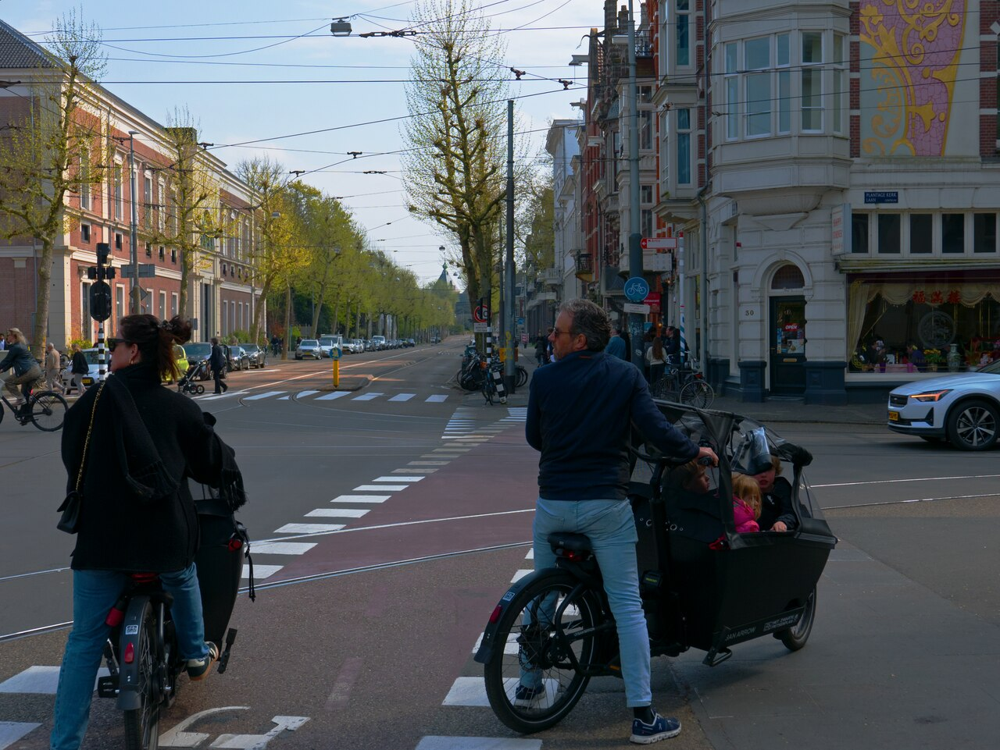
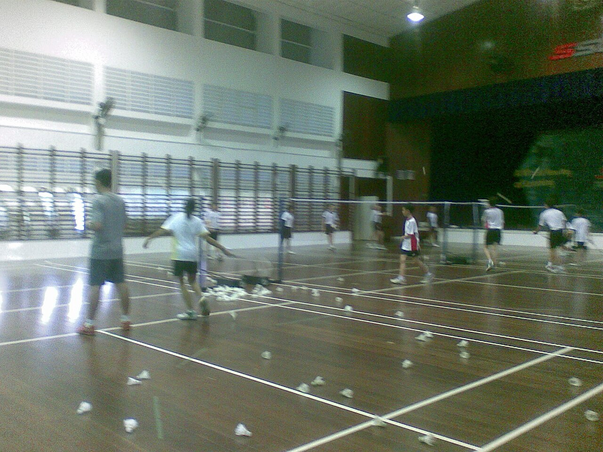
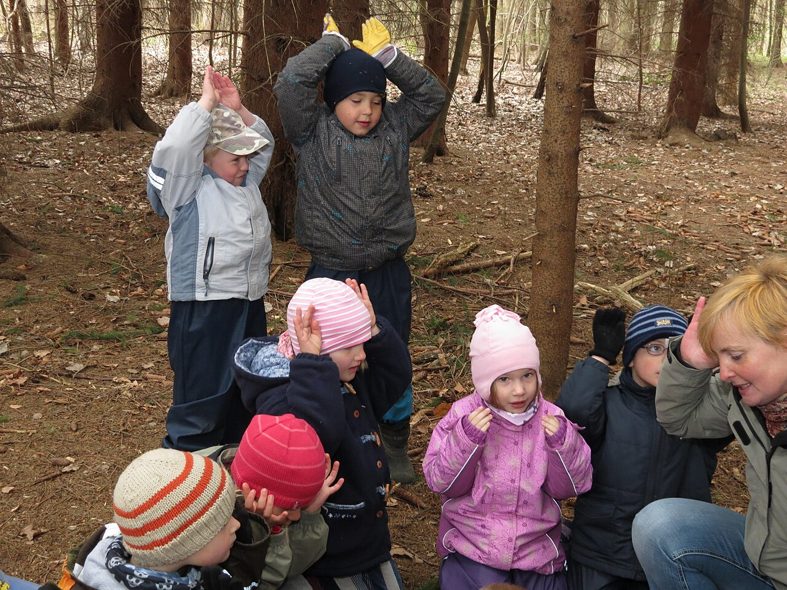

What the Countries Outcompeting Everyone Else Actually Do to Raise Children. Nine radically different societies. Eight childhood conditions appearing independently across all of them. Every one available in the home you already have.
Achievement is what a child produces when adults have arranged the conditions for success: the tutor, the schedule, the safety net. Capability is what a child does when none of that is there. When the plan fails. When nobody is watching. When help is not coming.
Most parenting optimises for the first and quietly starves the second. The Capable Child is built on that distinction, and on the evidence of nine societies that independently arrived at how to build the second without sacrificing the first. Estonia surpassed Finland in the world's most rigorous education assessment with below-average per-pupil spending. Singapore's students in the lowest income quartile outperform the overall OECD average. Israel produces more Nasdaq-listed technology companies per capita than any country outside the United States. None of these outcomes trace to pressure. All of them trace to conditions.



Photographs from Wikimedia Commons. Full credits and licenses.
The most capable adults in every society studied were not pushed into capability. They were trusted into it.The Capable Child · Tom Reed
Every strategy includes three calibration levels: calm Saturday, difficult Thursday, and the harder season, because a parent at Level 3 cannot construct words from scratch. The book gives them the sentence. Then the fallback for when the sentence doesn't work.
Nine societies independently arrived at the same eight childhood conditions: independence granted early, real work with real stakes, unstructured time protected, failure treated as information, a reading culture in the household, outdoor time as a daily baseline, shared family meals, and protected attention. None require money or a particular school system.
Achievement is what a child produces when adults have arranged the conditions for success. Capability is what a child does when none of that is there. Most parenting optimises for the first and quietly starves the second. The Capable Child is built on that distinction.
In PISA 2022, Estonia surpassed Finland in reading, mathematics, and science while spending below the OECD average per pupil. Every Estonian teacher holds a master's degree, and Estonia has one of the smallest performance gaps between advantaged and disadvantaged students in the world.
Resilience is built through repeated exposure to manageable difficulty combined with an adult response that treats failure as survivable and informative. A parent who responds with curiosity rather than urgency teaches the child that failure is information.
The countries producing the most globally competitive adults are running more trusting childhoods, not more intense ones. Israel produces more Nasdaq-listed technology companies per capita than any country outside the United States. Switzerland holds more Nobel Prize winners per capita than almost any nation.
The Capable Child by Tom Reed (BoonHouse Publishing) examines Finland, Japan, Israel, Estonia, the Netherlands, Denmark, Norway, Singapore, and Switzerland and identifies the eight childhood conditions appearing across all nine. Available on Amazon.
How Small Moments Make or Break a Child. An 8-week system to stop yelling, end screen battles, and raise confident, independent kids.
Montessori-aligned picture books for toddlers: emotions, routines, transitions, and life skills. Calm, real, and child-led.